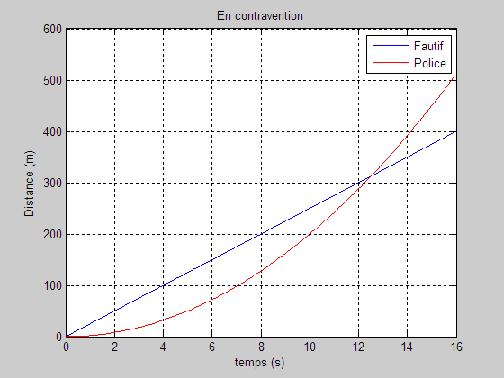

GraphEx1
clear; clc; close all
L'instruction close all ferme toutes les fenêtres graphiques. C'est une instruction utile à placer au début d'un programme, car il arrive souvent que des instructions fautives laissent un graphique imparfait dans une fenêtre.
Générer un vecteur temps, par exemple de 0 à 16 s environ.
for i = 1:160 t(i) = (i-1)/10; Fautif(i) = 25*t(i); Police(i) = 0.5*4*t(i)^2; end % Tracer les deux courbes, la première en bleu, % la seconde en rouge : plot(t,Fautif,'b-', t,Police,'r-'); % Compléter le graphique. grid on; xlabel('temps (s)'); ylabel('Distance (m)'); title('En contravention'); legend('Fautif', 'Police');

Utiliser la loupe du menu pour mieux visualiser la solution au point de croisement.